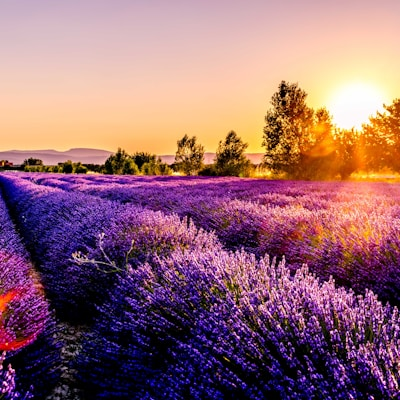
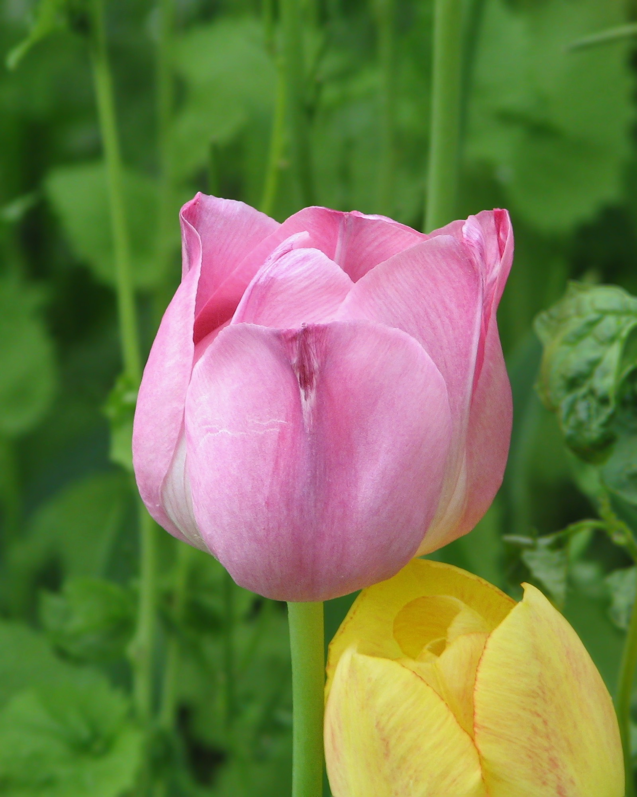
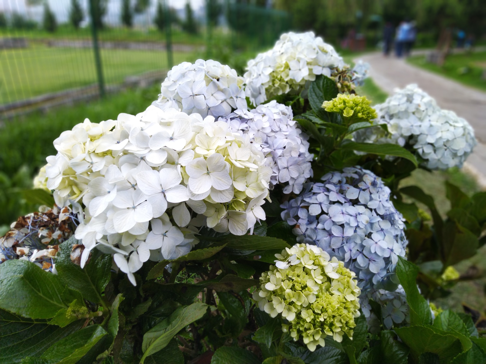

Explore & Grow
The web demo's local catalog and garden 💚
My Garden 🌱
Your local flower collection in this demo
This demo's data lives in this browser
It does not synchronize with the iOS app. Export a JSON copy or erase your garden whenever you like.
Calendar 📅
Your weekly care schedule
This week
📋 Today's tasks
Plant Doctor 🏥
Assistive symptoms, home remedies, and first-aid guidance
🚨 Is your plant dying?
First aid:
1. Remove it from direct sun immediately
2. Check the roots — brown or soft roots can indicate overwatering → let them dry for 3 days
3. If the soil is dry and hard → soak the pot in water for 15 minutes
4. Remove fully dried or rotten leaves
5. Move it to indirect light with good ventilation
6. Do NOT fertilize a stressed plant — wait 2 weeks
1. Remove it from direct sun immediately
2. Check the roots — brown or soft roots can indicate overwatering → let them dry for 3 days
3. If the soil is dry and hard → soak the pot in water for 15 minutes
4. Remove fully dried or rotten leaves
5. Move it to indirect light with good ventilation
6. Do NOT fertilize a stressed plant — wait 2 weeks
Tips 💡
Seasonal guidance for your garden
📸 Experimental local identifier
Upload a clear photo and Rocío will compare it with the 15 flowers in this demo; the result is assistive.
Local mode active
Tap to upload a photo
🔬
Analyzing your flower...